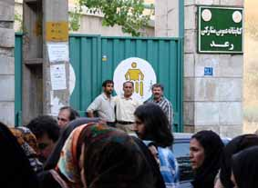

پذيرش > تریبون > مقالات > روايتي ديگر از سميناري كه برگزار نشد


 روايتي ديگر از سميناري كه برگزار نشد روايتي ديگر از سميناري كه برگزار نشد
24 شهریور 1385 - آزاده فرقاني - نسخه قابل چاپ
يكشنبه 5 شهريور ماه 1385، براي چندمين بار در سالهاي اخير پشت درهاي بسته مانديم و نگه داشته شديم وعجب اضاعي بود!
از صبح زود تلفنها پي درپي زنگ ميزدند، گفتهاند:«مجوز ندارد، پس برگزار نمي شود.»چرا؟ مگر از قبل نميدانستند؟ چرا هفته قبل نگفتند؟ مگر موسسه نيكوكاري رعد متعلق به بخش خصوصي نيست؟ مگر موسسهاي خيريهاي ومردمي نيست؟ مگر با پول همين آدمها كه پشت در جمع شدهاند اداره نميشود؟ مگر با نيروي همين آدمهاي پشت در بنيانگزاري نشده است؟ مگر برنامه مسالمت آميز، قانوني نيست؟ اگر هست ، پس چرا چنين ميكنند؟
دلچسبي فضايي كه قرار بود در سالن اجتماعات موسسه رعد ايجاد شود را از دست دايدم، اما حال و هواي پشت در هم دست كمي از آن نداشت و براي خودش «هويتي» داشت. از حدود 15 دقيقه مانده به ساعت 5، آرام آرام بر شمار منتظران افزوده مي شد، آمدگان زياد بودند، زيادتر از انتظار برگزار كنندگان . سخنرانان جلسه برگزار نشده تا ساعت 5:45 دقيقه همچنان به اميد باز شدن درها ايستاده بودند و با هم گپ مي زدند و طنز اجتماعي ميگفتند. هوا هنوز گرم و تابستاني بود، اما گرما هم شكست خورد در مقابل جمع پر شور و انرژي ما، هوا دلچسب بود و دلپذيرتر مي شد آن دم كه آشنايي يا دوستي از دور، در كنار يا پشت سر خود مي ديديم. ديگر كسي از اين پشت در ماندنها، از اين توهينها و تحقيرها و از اين بي توجهي به خواستهاي به حق و انساني ما، شكه نمي شود و خود را حيران و سرگردان نميبيند.
فضاي تازه اي باز شده بود. انگار اين رفتارها و اين اتفاقات، روزمره و هميشگي شده و ديگر توان ايجاد امواج فشار و اضطراب و تنش را ندارند. همه مي دانند كه واقعا جايي، ارگان، سازماني، وزارتخانه اي لازم نيست تا زنان بگويند كه هستند و ميتوانند و ميخواهند كه حقوقي ، جايگاهي و مقامي برابر با مردان داشته باشند.
بگويند كه خواستهاي آنان صرفا حقوقي و قانوني و از همه مهمتر داراي تاريخي صد ساله است.پس چرا نصفه و نيمه باقي بمانند؟
دفعه آخري كه پشت در ايستاده بودم هم انگار همين آشنايان را مي ديدم. باز ديدم، دكتر ناصر زرافشان را ، چقدر ساده و بي تكلف. از لحظه آمدنش جمعيتي به دور او حلقه زده بودند تا لحظه آخر. مرد كه سال هاي با ارزش از عمر خود را بي دليل و به ناحق در پشت ميله هاي اوين گذرانده و امروز و اين چند روز را كه براي درمان وديداري كوتاه از خانواده آمده، خواسته است كه در كنار ما باشدة شايد براي اينكه به خوبي مي داند چه ناحق، حقوق زنان ناديده گرفته شده است.
هر چه نگاه مي كنم جز او ديگران هم، همه آشنا و چه نزديكند: دكتر نكويي، عليرضا جباري، دكتر رئيس دانا، عمران صلاحي، بابك احمدي، سعيد حبيبي و ..........
نامبردنم از جمع مردان حاضر در آن روز قطعا نه به دليل مرد بودن آنها و نه به دليل موقعيت اجتماعي و جايگاه خاص آنها، بلكه به اين علت است كه احساس مي كنم انگار اينان صداي ما را كمي شنيده اند. صداي فرياد هاي بي وقفه صد ساله مان را. صداي خسته از ناملايمات اما همچنان پر شور ما را. صداي پر توان و با فراز و نشيب ما را. جمعي از دوستان در حال جمع آوري امضا هستند. اگر نشد كل برنامه اجرا شود. قسمتي از آن هم غنيمت است. امضاهايي با مشخصات كامل و غير قابل انكار. نام، سن، جنس، تحصيلات، منطقه مسكوني، امضاي خيلي محكم و مشخص، محكمه پسند و بدون ترديد!
اما وقتي خوب و با دقت نگاه مي كنم، باز هم نگاهم به دنبال كسي مي گردد، آن آشنايي كه چندي پيش هم با همين جديت مردان امروز، ما را همراهي مي كرد. علي اكبر موسوي خوئيني هم جايش آن روز خالي بود.
از سياهي چرا هراسيدن
شب پر از قطره هاي الماس است
ارسال به
بالاترین
،
توییتر
،
فریندفید
،
فیسبوک
در همين بخش :
 دهمین دورۀ مراسم تندیس صدیقه دولت آبادی ۱۳۹۲ دهمین دورۀ مراسم تندیس صدیقه دولت آبادی ۱۳۹۲
کارت پستالهایی به بهانهی هشت مارس و به یاد همهی مبارزین راه برابری
بیانیه بیش از 350 تن از مدافعان حقوق زنان به مناسبت روز جهانی زن؛ زنان هر روز فرودستتر میشوند
لباسی که برای تن ما دوخته اند! /اعظم بهرامی
چالشها و چشمانداز فعالیت مدنی زنان
ديگر بخش ها :
طرح یک میلیون امضا
|
مقالات
|
سایت نوشته ها
|
اخبار
|
گزارش كمپين
|
گفت و گو
|
علیه سکوت
|
كوچه به كوچه
|
نامه های شما
|
گزارش ویژه
|
گفتگو با اعضا
|
ویژه سالگرد کمپین
|
تصویر برابری
|
دل آرام علی
|
تریبون
|
مقالات
|
تاریخ شفاهی
|
خارج از چارچوب
|
کتابخانه
|
درباره کمپین
|
کمپین در شهرها
|
کمپین در بند
|
صدای تغییر
|
ویژه 22 خرداد
|
لایحه حمایت از خانواده
|
گالری
|
عشا مومنی
|
امیر یعقوبعلی
|
خدیجه مقدم
|
راحله عسگری زاده و نسیم خسروی
|
پروین اردلان،جلوه جواهری، مریم حسین خواه، ناهید کشاورز
|
زینب پیغمبرزاده
|
سعیده امین، سارا ایمانیان، محبوبه حسین زاده، ناهید کشاورز و همایون نامی
|
احترام شادفر
|
نسیم سرابندی زاده،فاطمه دهدشتی
|
وبلاگ مهمان
|
پرونده خرم آباد
|
دستگیری ها
|
مریم مالک
|
پرستو اللهیاری
|
مهرنوش اعتمادی
|
سمیه رشیدی
|
Other Languages
|
همراهان
|
«فراخوان کمپین ده روز با بهاره هدایت»
| English
|